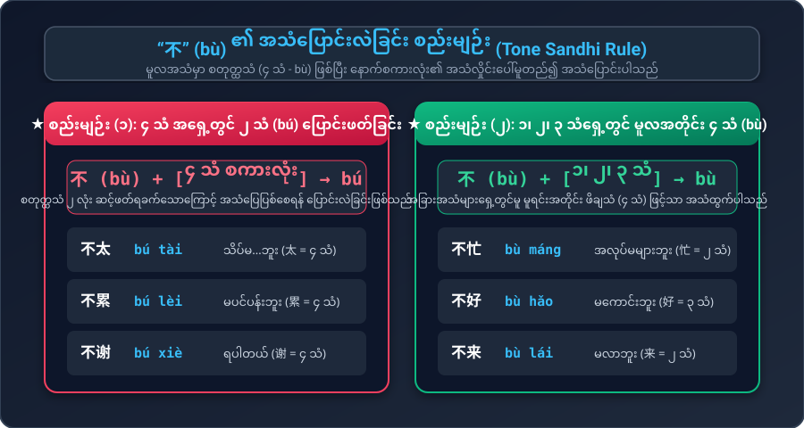
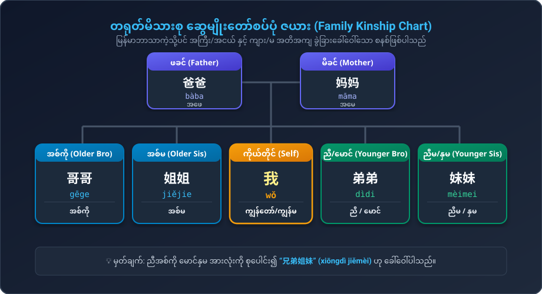

အလုပ်အကိုင် မေးမြန်းခြင်း၊ အတိုင်းအတာပြ စကားလုံးများ (အလွန်/သိပ်မ...)၊ "不" ၏ အသံပြောင်းပုံနှင့် မိသားစုအခေါ်အဝေါ်များ
အလုပ်တာဝန်နှင့် ကျန်းမာရေး အခြေအနေ မေးမြန်းရာတွင် အခြေခံအကျဆုံး ဝါကျများ
စာကြောင်းတစ်ကြောင်းချင်းစီ အသံဖွင့်နိုင်သလို၊ စကားပြောခန်းတစ်ခုလုံးကိုလည်း သဘာဝကျကျ နားထောင်နိုင်ပါသည်
မြန်မာဘာသာနှင့် မတူညီသော သဒ္ဒါအချိုးအကွေ့များနှင့် အသံလှိုင်း ပြောင်းလဲခြင်း စည်းမျဉ်းများ
တရုတ်စာတွင် “不” ၏ မူလသဘာဝအသံမှာ ၄ သံ (bù) ဖြစ်သည်။ သို့သော် နောက်ကပ်လိုက်သော စကားလုံးသည် ၄ သံ (စတုတ္ထသံ) ဖြစ်ပါက လျှာဖတ်ရ ချောမွေ့စေရန်အတွက် “不” ကို ၂ သံ (bú) အဖြစ် အလိုအလျောက် ပြောင်းဖတ်ရပါမည်။ ကျန်ရှိသော ၁ သံ၊ ၂ သံ၊ ၃ သံများ ရှေ့တွင်မူ မူလအတိုင်း ၄ သံ (bù) ဖြင့်သာ ဖတ်ရပါသည်။

မြန်မာစကားတွင် ရှေ့စကားကို ကောက်ကိုင်ပြီး "မင်းရော?၊ ဆရာကော?" ဟု မေးသကဲ့သို့ တရုတ်စာတွင် နာမ်/နာမ်စား နောက်၌ “呢” (ne) ကပ်ရုံဖြင့် ရှေ့စကားအခြေအနေကို အတိုကောက် မေးမြန်းနိုင်ပါသည်။
အလုပ်များခြင်း၊ ပင်ပန်းခြင်း၊ ကောင်းမွန်ခြင်းတို့၏ ပြင်းအားအလိုက် အသုံးအနှုန်း ၄ ဆင့် ကွဲပြားပုံကို အောက်ပါဇယားတွင် မြင်သာအောင် ပြသထားပါသည်:
အင်္ဂလိပ်ဘာသာတွင် "brother", "sister" ဟုသာ အကြမ်းဖျင်း ခေါ်ဆိုသော်လည်း တရုတ်ဘာသာနှင့် မြန်မာဘာသာတို့တွင် အစ်ကို (哥哥)၊ အစ်မ (姐姐)၊ ညီ/မောင် (弟弟)၊ ညီမ/နှမ (妹妹) ဟု အကြီး/အငယ် အတိအကျ ခွဲခြားခေါ်ဝေါ်ကြပါသည်။

စာလုံးတစ်လုံးချင်းစီကို ဖိနှိပ်၍ သန့်ရှင်းသော Neural စံအသံထွက်ကို လေ့ကျင့်နိုင်ပါသည်
သင်ခန်းစာပါ အသံထွက်နှင့် သဒ္ဒါစည်းမျဉ်းများကို စမ်းသပ်ဖြေဆိုကြည့်ပါ
မေးခွန်း (၁): "不" ၏ နောက်တွင် ၄ သံ (စတုတ္ထသံ) လိုက်ပါက "不" ကို မည်သည့်အသံဖြင့် ပြောင်းဖတ်ရသနည်း?
မေးခွန်း (၂): "ကျွန်တော် အရမ်းအလုပ်များတယ်၊ မင်းရော?" ၏ တရုတ်ဘာသာပြန်မှာ အဘယ်နည်း?
မေးခွန်း (၃): တရုတ်ဘာသာတွင် "အစ်ကို" ကို မည်သို့ ခေါ်ဝေါ်သနည်း?